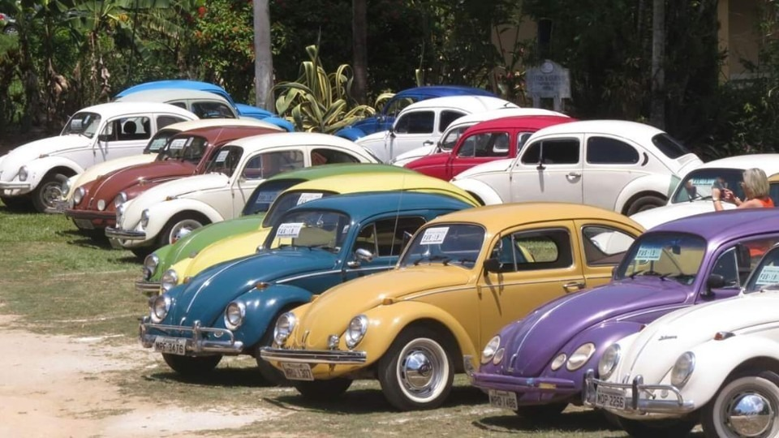

A história dos carros
Cerca de 130 anos atrás, um homem inventou uma estranha máquina movida por um motor.
Agora que os veículos automatizados estão prontos para atrapalhar o próximo século, vamos considerar a estrada
que nos trouxe até aqui com uma breve história dos carros.
O primeiro carro a ser inventado
O inventor alemão Karl Benz construiu o primeiro carro movido por um motor
de combustão interna mas foi sua esposa Bertha quem levou o carro em sua primeira
viagem de longa distância para visitar sua mãe, provando o potencial do motor para o público.
Como surgiu o carro elétrico?
Havia mais carros rodando com eletricidade do que gasolina no final do
século XIX.
Gasolina barata e o fato de carros elétricos não poderem viajar por longas distâncias faziam com que eles
caíssem em desgraça. Apesar de hoje em dia elesestarem voltando à popularidade, eles já existem há mais de 100 anos.
História dos automóveis: o começo da produção em massa
O Modelo T de
Henry Ford
marcou o começo do carro como um esteio em nossa sociedade.
Foi o primeiro automóvel produzido em massa, usando uma técnica de linha de montagem para
construir um automóvel para a grande multidão.
O surgimento de novas luzes para os veículos
Lester Wire, chefe do esquadrão da polícia de Salt Lake City, eletrizou o primeiro semáforo.
Apelidado de “a gaiola”, foi rapidamente copiado para o resto do mundo. Com a adição da seta
de direção, os carros começaram a indicar suas intenções para outros motoristas e realmente
interagirem com seu ambiente direto, tornando a direção mais segura.
Carros antigos
Artigo foi publicado em